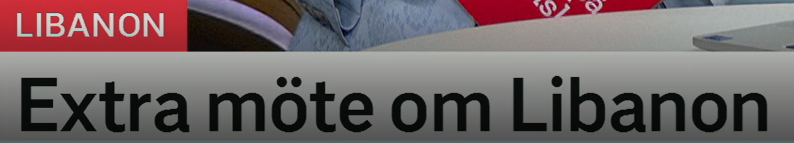
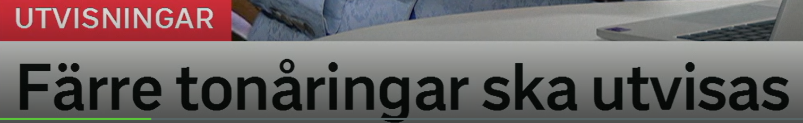
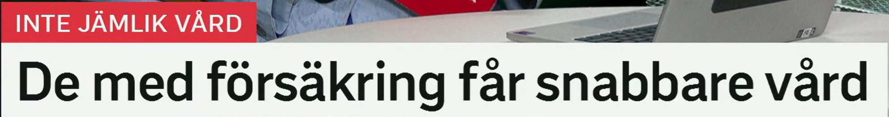
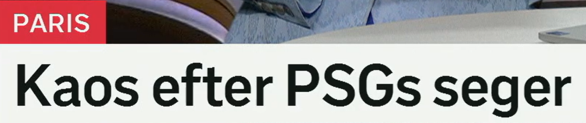
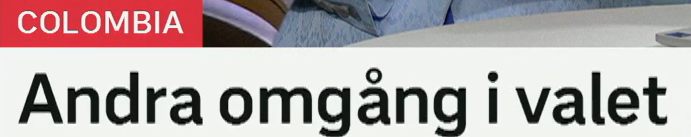

Extra möte om Libanon
关于黎巴嫩的额外会议/特别会议。
extra 表示“额外的、特别的、格外”。可修饰名词，也可修饰形容词或副词。
近义词：ytterligare 进一步的/额外的，särskild 特别的，extraordinär 非常规的，akut 紧急的。
Regeringen håller ett extra möte i kväll. 政府今晚召开特别会议。
ett möte 会议、会面；动词 möta 见面、面对。常见复合词：ministermöte 部长会议，krismöte 危机会议，toppmöte 峰会。
近义表达：sammanträde 正式会议，träff 会面，förhandling 谈判。
Ett krismöte hålls efter attacken. 袭击后召开危机会议。
om 表示“关于”。高频搭配：möte om 关于……的会议，debatt om 关于……的辩论，rapport om 关于……的报告。
De diskuterar läget i Libanon. 他们讨论黎巴嫩局势。
标题结构
Extra möte om X = 关于 X 的特别会议。完整句可写：Det hålls ett extra möte om Libanon.

Färre tonåringar ska utvisas
将有更少青少年被遣返。
färre 表示“更少的”，用于可数名词。对比 mindre，常用于不可数或程度。
近义表达：ett mindre antal 更少数量，inte lika många 没有那么多，minskat antal 减少的数量。
Färre elever söker till skolan. 申请这所学校的学生更少了。
en tonåring 青少年，通常指 13-19 岁。相关词：ungdom 青少年/青年，barn 儿童，minderårig 未成年人。
Många tonåringar använder sociala medier. 许多青少年使用社交媒体。
utvisa 遣返、驱逐出境；utvisas 是被动，ska utvisas = 将被遣返。
近义词/相关词：avvisa 拒绝入境/遣返，deportera 驱逐，utvisning 遣返，uppehållstillstånd 居留许可。
Mannen ska utvisas efter domen. 该男子将在判决后被遣返。
政策变化句型
Färre X ska Y = 将有更少 X 做/被做 Y。被动形式中，ska utvisas 可以整体记作“将被遣返”。

De med försäkring får snabbare vård
有保险的人获得更快的医疗服务。
de med försäkring = 那些有保险的人。类似：de utan jobb 没工作的人，de med barn 有孩子的人。
De utan biljett får vänta. 没票的人需要等待。
en försäkring 保险。相关词：sjukförsäkring 医疗/病假保险，hemförsäkring 家庭保险，försäkringsbolag 保险公司。
近义/相关表达：skydd 保障，ersättning 赔偿/补偿，försäkringsskydd 保险保障。
Hon har en privat sjukförsäkring. 她有私人医疗保险。
få vård 获得医疗；snabbare 是 snabb 的比较级，表示更快。
近义表达：få hjälp snabbare 更快获得帮助，kortare väntetid 更短等待时间，prioriteras 被优先处理。
Patienter med försäkring får snabbare vård. 有保险的病人获得更快医疗。
jämlik 平等的；vård 医疗、护理。inte jämlik vård = 医疗不平等。
Målet är jämlik vård i hela landet. 目标是在全国实现平等医疗。
比较级表达
får snabbare vård = 获得更快医疗。可以替换成 bättre vård 更好医疗、dyrare vård 更贵医疗。

Kaos efter PSGs seger
PSG 胜利后出现混乱。
ett kaos 混乱、混沌。新闻里常用于交通、庆祝、政治场面。
近义词：oordning 无序，tumult 骚动，stök 混乱/吵闹，panik 恐慌。
Det blev kaos på stationen. 车站陷入混乱。
表示“在……之后”。搭配：efter matchen 比赛后，efter segern 胜利后，efter olyckan 事故后。
Polisen kom efter larmet. 警方在报警后赶到。
缩写或名称后加 -s 表示“……的”。也常写作 PSG:s。类似：EU:s，USA:s，NATO:s。
PSGs supportrar firade segern. PSG 的球迷庆祝胜利。
en seger 胜利；动词 segra 获胜。反义词：förlust 失败/失利。
相关词：vinst 胜利/盈利，triumf 凯旋/大胜，finalseger 决赛胜利，mästerskap 锦标赛。
Laget tog en viktig seger. 球队取得一场重要胜利。
事件后果标题
Kaos efter X = X 之后出现混乱。可替换成 oro efter、protester efter、firande efter。

Andra omgång i valet
选举进入第二轮。
andra 表示“第二”。注意它也可以表示“其他的”，要靠语境判断。
序数词组：första 第一，andra 第二，tredje 第三，sista 最后。
Det är andra gången hon vinner. 这是她第二次获胜。
en omgång 一轮、一回合、一批。选举、比赛、招聘都能用。
近义词：runda 轮次，etapp 阶段，fas 阶段，valomgång 选举轮次。
Kandidaterna går vidare till nästa omgång. 候选人进入下一轮。
ett val 选举/选择；i valet 在这次选举中。相关词：rösta 投票，väljare 选民，kandidat 候选人。
Många unga röstar i valet. 很多年轻人在选举中投票。
选举标题
Andra omgång i valet 可扩展为：Det blir en andra omgång i valet. 将进行第二轮选举。
复习表：重点词 + 近义词 + 高频用法
| 关键词 | 近义/相关词 | 高频搭配 |
|---|---|---|
| extra | ytterligare, särskild, akut, extraordinär | extra möte, extra stöd, extra viktigt |
| utvisa | avvisa, deportera, utvisning, uppehållstillstånd | ska utvisas, beslut om utvisning, utvisas ur landet |
| försäkring | skydd, ersättning, sjukförsäkring, försäkringsbolag | ha försäkring, privat försäkring, försäkringsskydd |
| snabbare | fortare, kortare väntetid, prioriteras | få snabbare vård, gå snabbare, bli snabbare |
| kaos | oordning, tumult, stök, panik | kaos efter matchen, trafikkaos, skapa kaos |
| omgång | runda, etapp, fas, valomgång | andra omgång, nästa omgång, gå vidare |
练习 1
把“政府召开特别会议”译成瑞典语。提示：Regeringen håller ett extra möte.
练习 2
说“更少人将被遣返”。提示：Färre personer ska utvisas.
练习 3
用 får snabbare vård 写“有保险的人获得更快医疗”。
练习 4
把“选举进入第二轮”译成瑞典语。提示：Det blir en andra omgång i valet.